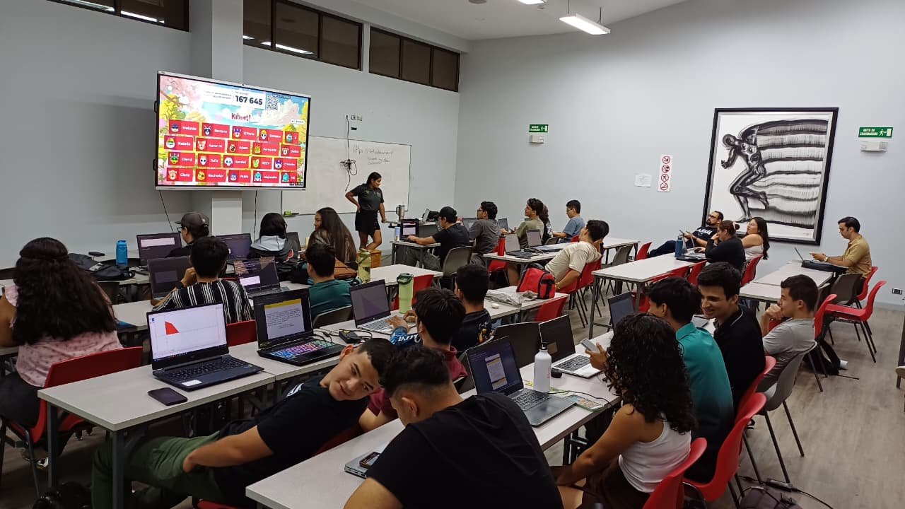
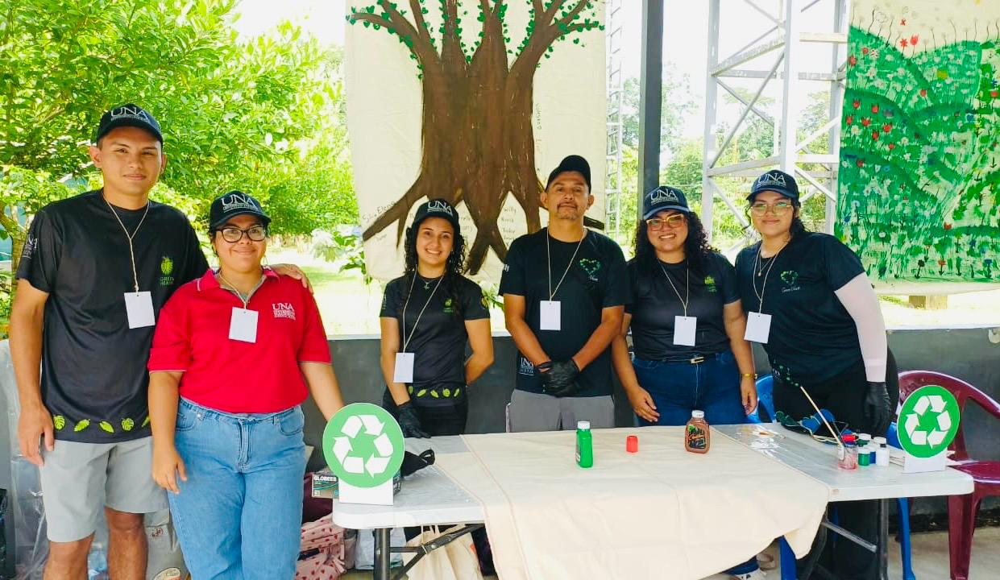

Recolección de Residuos
Green Hearts coordina jornadas comunitarias de limpieza en ríos, parques, calles y zonas rurales de Sarapiquí, con la participación de vecinos, estudiantes y personas voluntarias.
Jornadas ComunitariasIniciativa ambiental universitaria
Green Hearts impulsa un futuro más limpio y sostenible desde el corazón del Caribe costarricense.

Sobre Nosotros
Green Hearts es una organización voluntaria universitaria de la Universidad Nacional de Costa Rica, sede Sarapiquí. La iniciativa reúne a estudiantes comprometidos con la protección ambiental, la sostenibilidad y el bienestar de las comunidades.
La organización articula esfuerzos con comunidades locales, docentes y autoridades para generar un impacto medible y duradero en una de las regiones más biodiversas de Costa Rica.
Fomentar la conciencia ambiental mediante reciclaje, recolección de residuos sólidos y educación en la Región Huetar Norte.
Consolidarse como un referente estudiantil ambiental en Costa Rica y contribuir a la replicación de este modelo en otras sedes universitarias.
Líneas de trabajo
Cada línea de trabajo fortalece la participación comunitaria y contribuye a la protección de los ecosistemas de Sarapiquí.
Green Hearts coordina jornadas comunitarias de limpieza en ríos, parques, calles y zonas rurales de Sarapiquí, con la participación de vecinos, estudiantes y personas voluntarias.
Jornadas ComunitariasLa organización implementa puntos de acopio y orienta a hogares, negocios y a la comunidad universitaria en la correcta clasificación de residuos plásticos, vidrio, metal y orgánicos.
Economía CircularGreen Hearts desarrolla programas de concienciación en escuelas, colegios y mercados para promover la valorización de materiales y el consumo responsable desde edades tempranas.
Educación Ambiental
Green Hearts visitó la escuela Asentamiento Chirripó para enseñar al estudiantado a reciclar, separar los residuos y comprender la importancia de cada acción para cuidar la comunidad y el ambiente.

La organización impartió charlas de concienciación ambiental en la Universidad Nacional, sede regional Sarapiquí, para promover la participación de la comunidad universitaria en soluciones sostenibles.

Green Hearts participó en el primer Congreso de Educación Propia de los pueblos indígenas Bribri y Cabécar, donde reconoció el valor de sus saberes y territorios.
Resultados de la iniciativa
Desde su fundación, cada jornada, taller y kilogramo de residuo recolectado contribuye a la recuperación de los ecosistemas de Sarapiquí y al fortalecimiento de una cultura ambiental duradera.
"Sarapiquí es uno de los territorios con mayor biodiversidad de Costa Rica. Su protección representa una responsabilidad compartida entre estudiantes, instituciones y ciudadanía."
Voces de la comunidad
La iniciativa reúne experiencias de voluntariado, docencia y participación comunitaria que reflejan el proceso de transformación ambiental en Sarapiquí.
"El programa de recolección de residuos cambia mi forma de ver el ambiente: ahora siento que cada acción suma, y la comunidad está más conectada."
"Los talleres con jóvenes de escuelas rurales son un claro ejemplo de cómo sembrar raíces de conciencia ecológica para el futuro."
"La energía y compromiso en cada jornada es contagioso. Sarapiquí se está convirtiendo en un modelo de sostenibilidad en la región."
Archivo visual
La portada presenta una selección de actividades. Este archivo reúne fotografías y videos de las iniciativas desarrolladas por Green Hearts.

Voluntarios comprometidos con el medio ambiente

Explorando la biodiversidad de Sarapiquí

Recolección de residuos en zonas naturales
.jpeg)
Personas voluntarias colaborando por un futuro sostenible
.jpeg)
Concienciación en la comunidad
.jpeg)
Separación adecuada de residuos
.jpeg)
Conservando la biodiversidad de Sarapiquí
.jpeg)
Exploración y cuidado del entorno

Conociendo las especies nativas
.jpeg)
Iniciativas de sostenibilidad
.jpeg)
Educando sobre el cuidado del medio ambiente
.jpeg)
Unidos por la naturaleza
.jpeg)
Plantando árboles para el futuro
.jpeg)
Reciclaje y reutilización
.jpeg)
Protección de los recursos naturales
.jpeg)
Construyendo un mañana sostenible
Archivo visual
No hay contenido en esta categoría.
Participación voluntaria
Green Hearts convoca a estudiantes, docentes y personas de la comunidad interesadas en contribuir al cuidado del ambiente. No se requiere experiencia previa, sino disposición para participar.
Contáctanos
Para realizar consultas, presentar propuestas o establecer alianzas, puede comunicarse con Green Hearts a través de los siguientes canales.